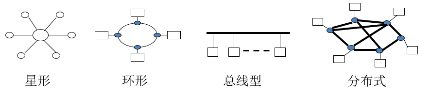
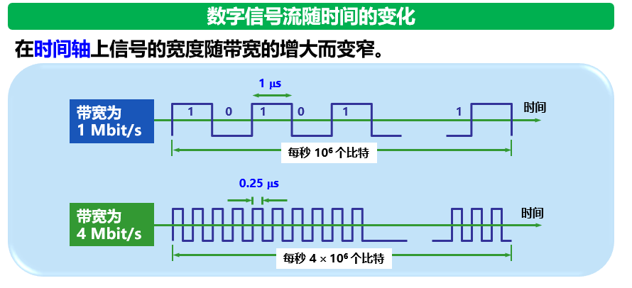
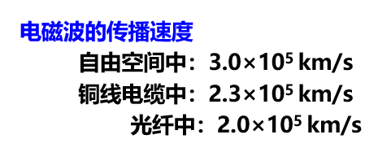
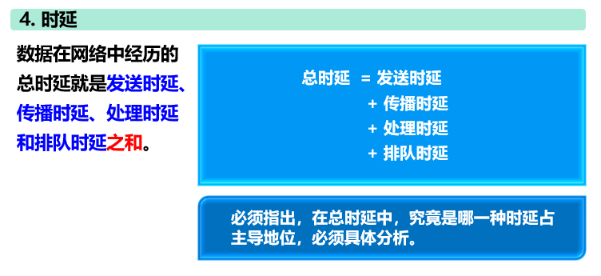
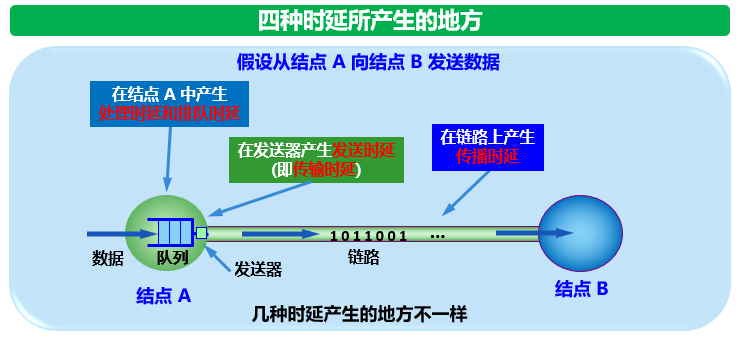
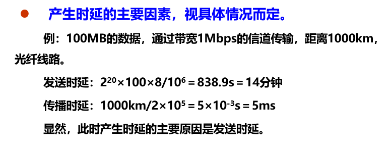
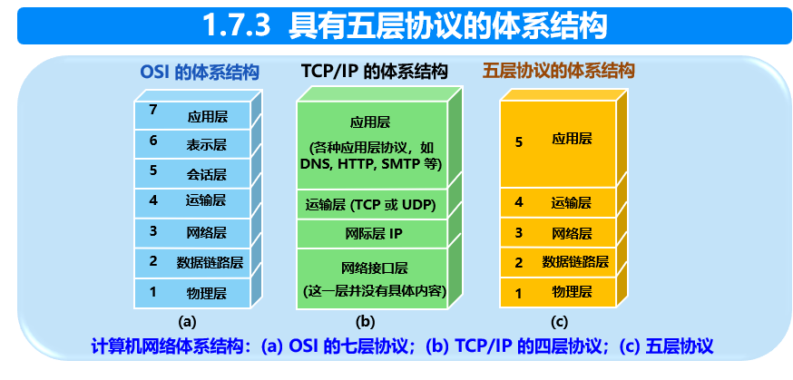
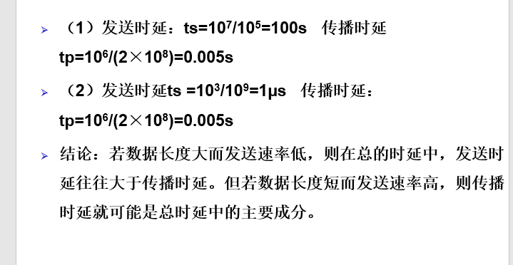
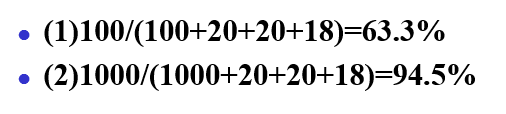

第一章 概述
1.1.1 计算机网络的定义
定义 ： 计算机网络是用通信线路将分散在不同地点并具有独立功能的多个计算机系统互相连接,按照网络协议进行数据通信,实现共享资源(资源共享)的计算机之集合。
1.5.2 几种不同类别的网络
1. 按照作用范围分类
- 广域网 WAN (Wide Area Network) 作用范围通常为几十到几千公里
- 城域网 MAN (Metropolitan Area Network) 作用距离约为5~50公里
- 局域网 LAN (Local Area Network) 局限在较小的范围（如一公里左右）
- 个人局域网 PAN (Personal Area Network) 范围很小，大约在10米左右
tips：若中央处理机之间的距离非常近（如仅一米的数量级甚至更小），则一般就称之为多处理机系统，而不称它为计算机网络
2. 按照网络的使用者分类
- 公用网 (Public Network) 也称公众网
- 专用网 (Private Network) 为特殊业务工作的需要而建设的网络，如军队、金融系统、铁路系统的内部网络
3. 把用户接入到互联网的网络
接入网AN (Access Network) 它又称本地接入网或居民接入网
接入网是一类比较特殊的计算机网络，用于将用户接入互联网
接入网本身既不属于互联网的核心部分，也不属于互联网的边缘部分
接入网是从某个用户端系统到互联网中的第一个路由器（也称为边缘路由器）之间的一种网络
从覆盖的范围看，很多接入网还是属于局域网
从作用上看，接入网只是起到让用户能够与互联网连接的“桥梁”作用
4. 按拓扑结构划分

5. 按传播技术划分
- 广播式网络：总线型、环形网等
使用场合：小的、地理上处于本地的网络多采用广播方式
- 点到点网络
6. 按传输速率划分
- 低速网络 （几十至10 Kbps）
- 中速网络 （几万至几十Mbps）
- 高速网络 （100M至几个Gbps）
7. 按传输媒体划分
- 有线计算机网
传输介质可以是双绞线、同轴电缆和光纤等
- 无线计算机网
传输介质有：无线电波、微波、红外线、激光等
8. 按交换方式划分
- 电路交换
如电话系统
- 报文交换
如电报
- 分组交换
如因特网、ATM网络
1.6.1 计算机网络的性能指标
计算机网络的性能一般是指它的几个重要的性能指标，主要包括：
- 速率
- 带宽
- 吞吐率
- 时延
- 时延带宽积
- 往返时间RTT
- 利用率
速率
- 速率是计算机网络中最重要的一个性能指标，指的是数据的传送速率，它也称为数据率 (data rate) 或比特率 (bit rate)。
- 单位是bit/s、kbit/s、Mbit/s、Gbit/s 等。例如4 x 10^10bit/s = 4Gbit/s
带宽
- 带宽(bandwidth)本来是指信号具有的频带宽度，其单位是赫（或千赫、兆赫、吉赫等）
- 在计算机网络中，带宽用来表示网络中某通道传送数据的能力。表示在单位时间内网络中的某信道所能通过的最高数据率。单位是 bit/s，即比特每秒

吞吐量
吞吐量 (throughput) 表示在单位时间内通过某个网络（或信道、接口）的数据量
吞吐量更经常地用于对现实世界中的网络的一种测量，以便知道实际上到底有多少数据量能够通过网络
吞吐量受网络的带宽或网络的额定速率的限制
时延
- 时延 (delay 或 latency) 是指数据（一个报文或分组，甚至比特）从网络（或链路）的一端传送到另一端所需的时间。
- 有时也成为延迟或迟延
网络中的时延由以下几个不同的部分组成：
- 发送时延
- 传播时延
- 处理时延
- 排队时延
发送时延
- 也称传输时延（区别于传播时延）
- 发送数据时，数据帧从结点进入到传输媒体所需要的时间
- 也就是从发送数据帧的第一个比特算起，到该帧的最后一个比特发送完毕所需的时间

传播时延
- 电磁波在信道中需要传播一定的距离而花费的时间
- 发送时延与传播时延有本质上的不同
- 信号发送速率和信号在信道上的传播速率是完全不同的概念

处理时延
- 主机或路由器在收到分组时，为处理分组（例如分析首部、提取数据、差错检验或查找路由）所花费的时间
排队时延
- 分组在路由器输入输出队列中排队等待处理所经历的时延
- 排队时延的长短往往取决于网络中当时的通信量


计算题：

注意点：
- 对于高速网络链路，我们提高的仅仅是数据的发送速率而不是比特在链路上的传播速率
- 提高链路带宽减小了数据的发送时延
判断： “在高速链路(或高带宽链路)上，比特会传送得更快些。” 这个说法是错误的
1.6.2 体系结构

课后习题
1-3 试从多个方面比较电路交换、报文交换、和分组交换的主要优缺点:
- 电路交换：端对端通信质量因约定了通信资源获得可靠保障，对连续传送大量数据效率高。
- 报文交换：无须预约传输带宽，动态逐段利用传输带宽对突发式数据通信效率高，通信迅速。
- 分组交换：具有报文交换之高效、迅速的要点，且各分组小，路由灵活，网络生存性能好。
1-17 收发两端之间的传输距离为1000km，信号在媒体上的传播速率为2×10^8^m/s。试计算以下两种情况的发送时延和传播时延：
（1）数据长度为x^7^ bit,数据发送速率为100kb/s。
（2）数据长度为10^3^bit,数据发送速率为1Gb/s。从上面的计算中可以得到什么样的结论？

1-19 长度为100字节的应用层数据交给传输层传送，需加上20字节的TCP首部。再交给网络层传送，需加上20字节的IP首部。最后交给数据链路层的以太网传送，加上首部和尾部共18字节。试求数据的传输效率。数据的传输效率是指发送的应用层数据除以所发送的总数据（即应用数据加上各种首部和尾部的额外开销）。若应用层数据长度为1000字节，数据的传输效率是多少？
